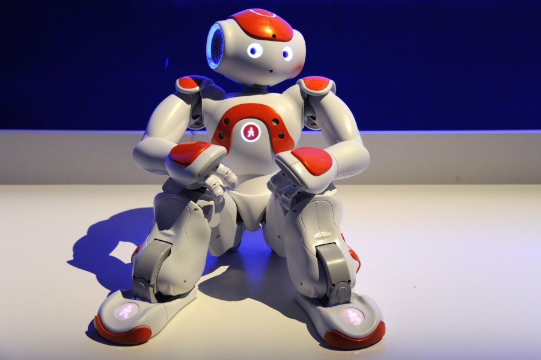

<!DOCTYPE htnl>
<htm>
    <head>
         <meta charset="UTF-8">
    </head>
    <body>
        <h1 style="color:red; text-align: center;">Robotukai</h1>
        
        <p style="font-family: verdana; font-size: 20px;">Robotas – mechaninis aparatas, galintis atlikti užprogramuotas fizines užduotis. Robotas gali būti valdomas tiesiogiai žmogaus arba veikti valdomas užprogramuoto kompiuterio. Robotai gali atlikti užduotis, kurios yra pavojingos žmogui, dirbti žmonėms kenksmingoje aplinkoje. Jie taip pat gali atlikti monotoniškas, dažnai pasikartojančias užduotis, tokiu būdu pigiai pakeisdami žmogaus rankų darbą. (žr. automatizavimas).</p>
        <video src="spot.mp4" width="100%" controls loop muted></video>
        <iframe src="https://robotika.lt/" width="100%" height="100%"></iframe>
        <iframe src="https://www.youtube.com/embed/SEbAMCOTfgo" width="100%" height="100%"></iframe>
    </body>